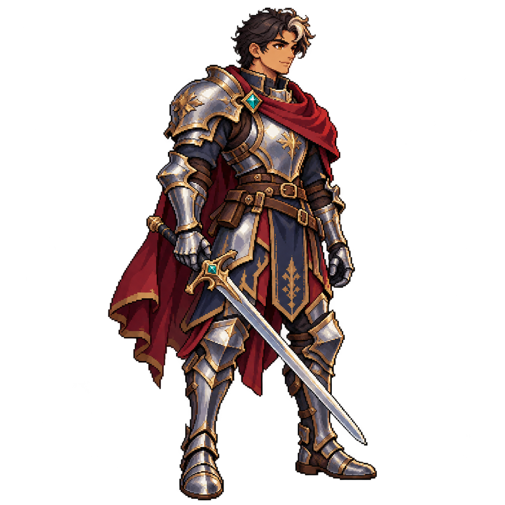
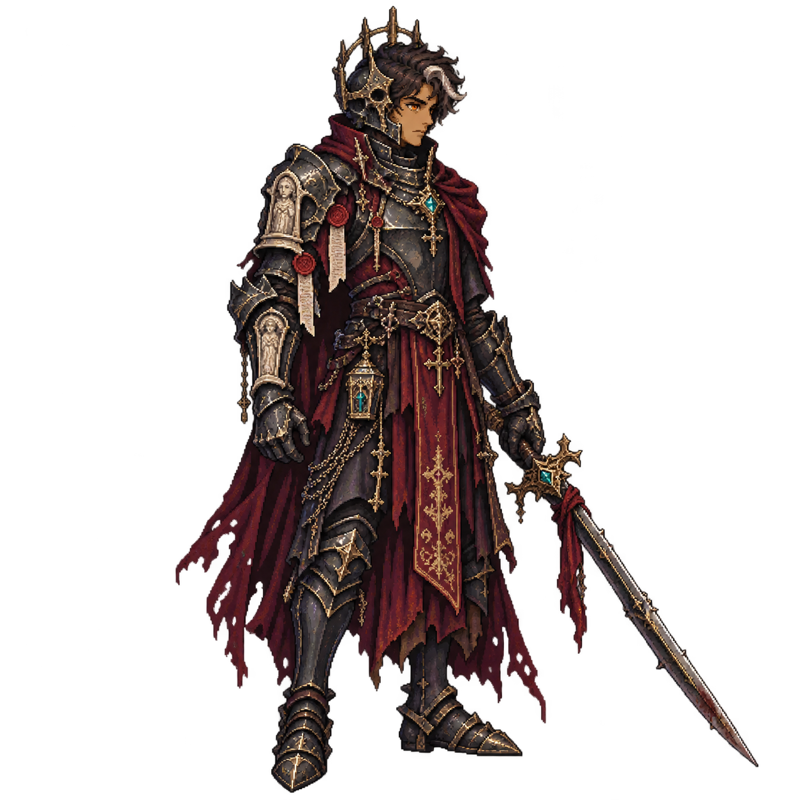
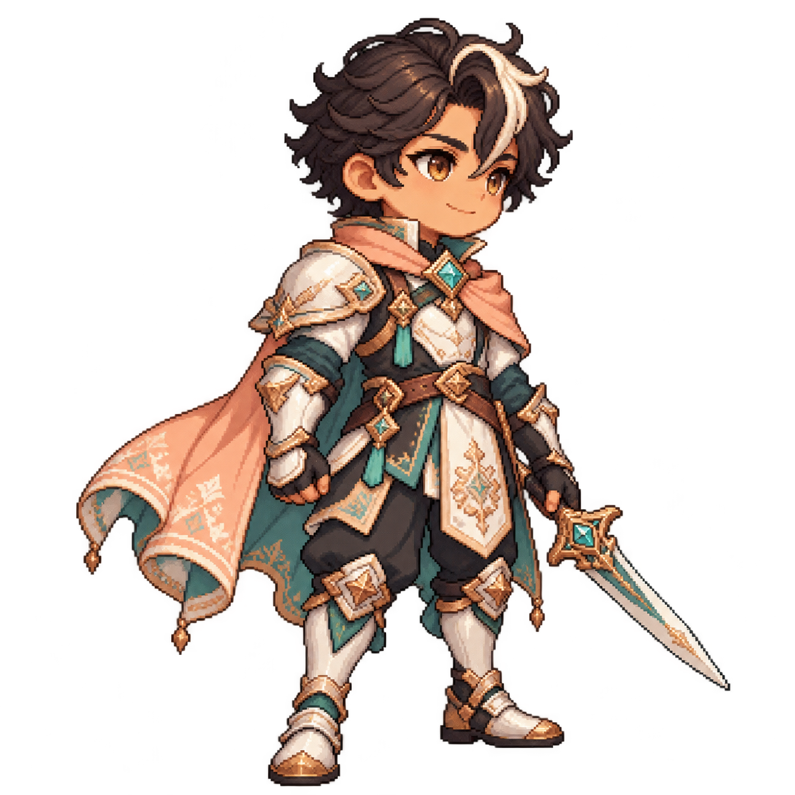
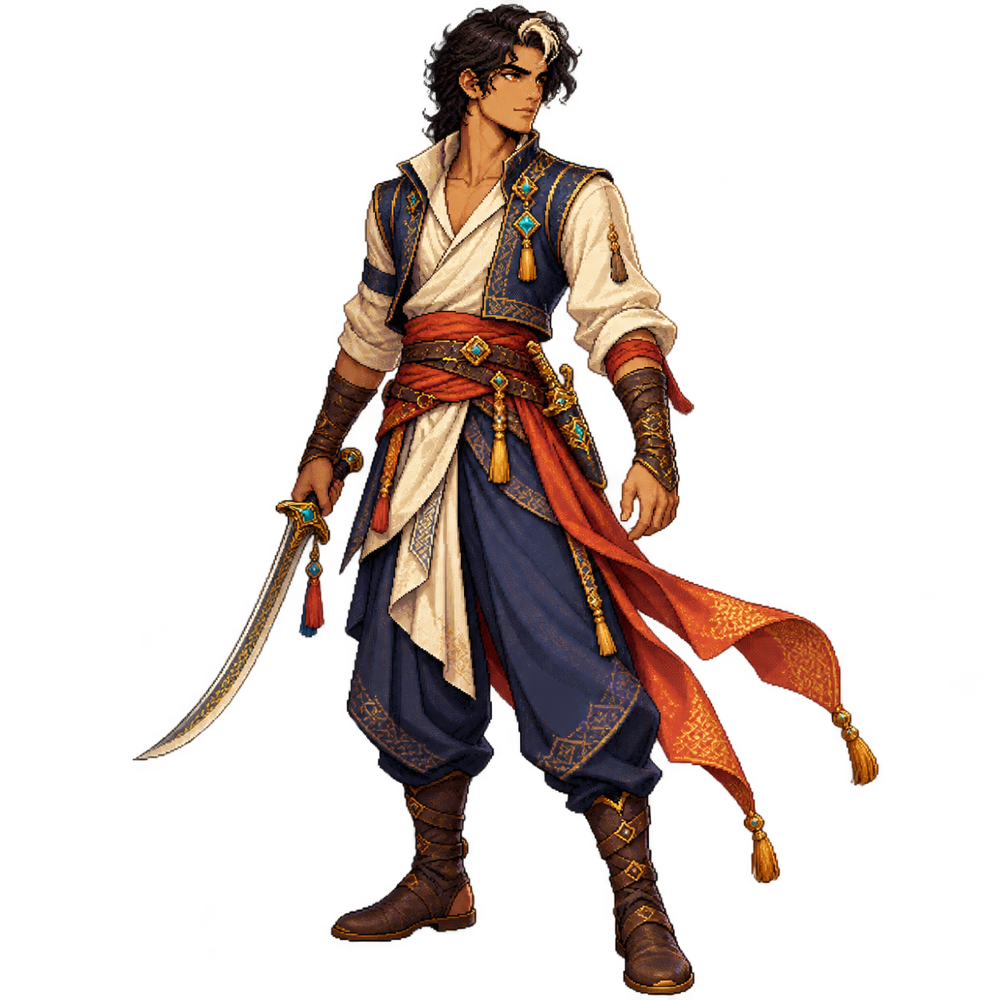

01 · ClássicoFantasia heroica. Aço, couro, acabamento dourado e tecido vinho. Presença robusta e leitura familiar.
02 · SombrioReferência de atmosfera: Blasphemous. Ferro envelhecido, relíquias, correntes e detalhes cerimoniais.
03 · KawaiiProporções chibi e expressão acolhedora. Pérola, turquesa e pêssego; proposta para uma futura skin.
04 · Aventureiro persaReferência de aventura: Prince of Persia. Silhueta ágil, tecidos em camadas, bordados e lâmina curva.